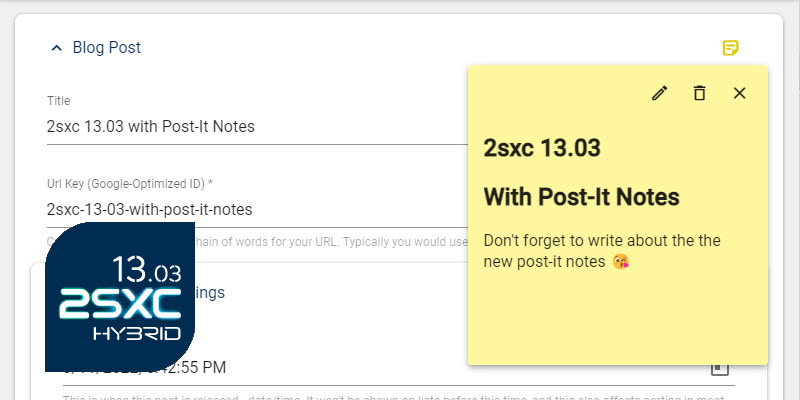

These v19 docs are archived 🔒.
Go to the
latest docs home
or try if
this exact page is available
in the latest docs.

Notes for Productivity
Tip
The key concept behind Notes is being able to add notes and warnings anywhere you need them.
You can add notes to 2sxc in many places, to help you:
- Document anything that's special
- Add warnings to help you remember things
- Mention pending tasks (still WIP)
Notes in Entities
You can add notes to almost all entities (items) in the system, in the top right corner. It looks like this:
Once added, editors will always see the yellow note-icon in the top right corner.
Make a Note become a Warning
Notes can also be converted to warnings, in case it's really important.
Future of Notes (WIP)
We have many plans for notes, incl.:
- Ability to add to pages
- Ability to show in the page if an item has a note
- Ability to use notes as tasks, to collect things which must still be completed
How Notes Work
Notes are simply Metadata of the thing they describe. They are stored as normal entities with a pointer to the thing they describe.
History
- Notes added in 2sxc 13.03 to use on entities